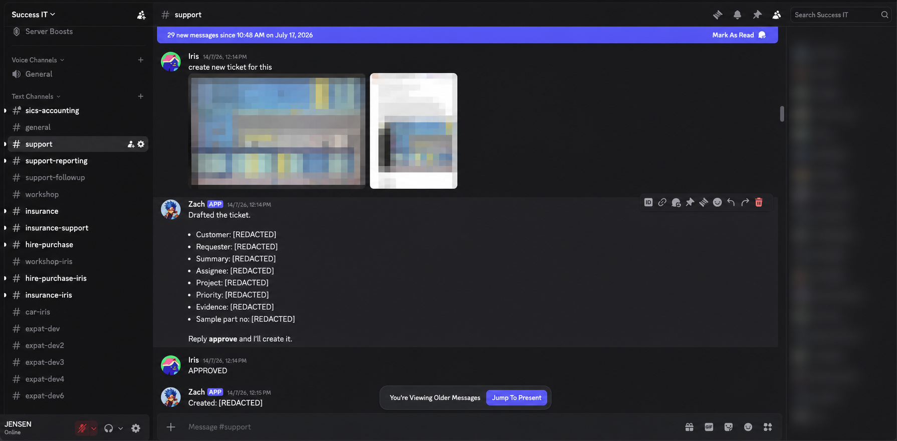
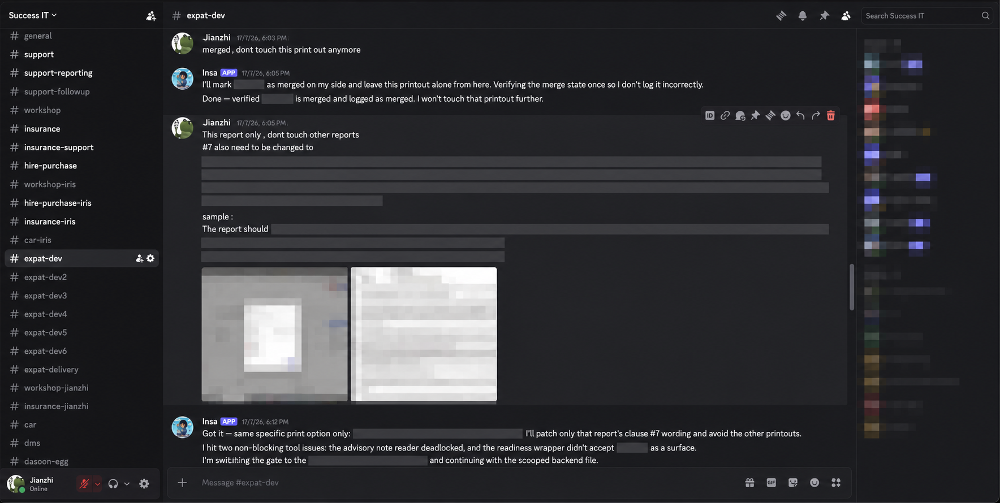

Discord, WhatsApp, email
Staff speak in the tools they already use.
AI backstage.
Humans in the relationship.
CEO, Success IT
Enterprise software modernization, AI-enabled operations and the human judgment that makes both useful.
Customized accounting and operational software for automotive, insurance intermediaries, wholesale and trading businesses—plus bespoke client systems.
Staff speak in the tools they already use.
Each agent has a job, memory and operating boundaries.
Routing, diagnostics and approvals become auditable steps.
Humans correct, approve, deploy, test and communicate.
PA and orchestration
LSupport intake and coordination
ZInvestigation and engineering depth
IFinance and bookkeeping
Ppeople across Singapore and Malaysia

ticket-created records in the email-state ledger
Important: SuccessGraph adds context. Iris still decides whether the ticket reflects what the customer meant.

01Product, repository, tenant and permissions
02CodeGraph, UI path, service and database dependencies
03Read-only, audited diagnostics with durable findings
04Explain, package a fix, or ask the human for more
01Working role, product and permitted intake mode
02Workspace, repositories, tenant path, branch and PR target
03Ambiguity, wrong branches or missing approval stop the workflow

| Person | Audited operations | Primary pattern | Relative activity |
|---|---|---|---|
| JianzhiBD & support · nontechnical | 2,538 | Lane resolution · readiness · PR packaging | |
| IrisLevel 1 support · 8 months | 527 | DB diagnostics · investigation · support context | |
| TracyEngineer | 262 | Issues · product investigation | |
| JacksonBD lead · coding for 5 months | 209 | Multi-product delivery · investigation | |
| JustinEngineer | Not cleanly attributable | Broader adoption signal only |
BD and support lead · no technical background
distinct PR URLs recorded in Jianzhi-scoped channels
Business development lead · learned to code in five months
distinct PR URLs associated with Jackson-scoped activity
Missing screen path, sample record or expected behavior returns to Iris.
Production writes, protected changes and deployment remain human-controlled.
A human tests production and Iris decides what the customer should hear.
The customer is helped once.
Model · context · tool contract · routing · permissions · infrastructure. Fix the layer, then replay the incident.
Agent-assisted workflows are part of that capacity story—but headcount change alone does not prove causation.
Edit the assumptions live. These are working estimates—not measured productivity claims.
Direct human contact remains the service surface.
AI increases capability behind the relationship.